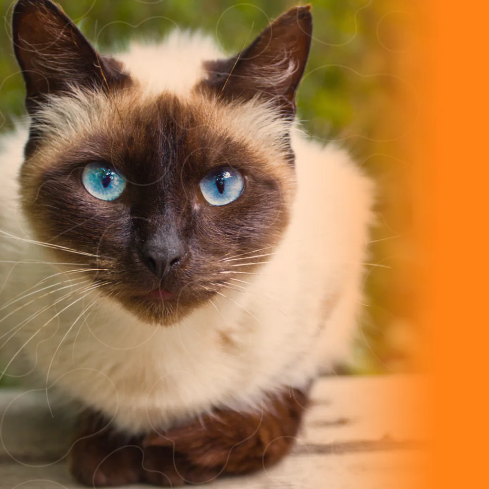

Siamês
Gato siamês é uma raça de gato oriental, caracterizada por um corpo elegante e esguio e uma cabeça marcadamente triangular. Pode ser confundido com a raça de gatos Thai que tem origem na raça siamesa mas apresenta uma morfologia bem distinta — O gato Thai é semelhante ao siamês antigo.

Maine coon
Maine Coon é uma raça de gato originária do nordeste dos Estados Unidos. É considerada a raça de pelo mais antiga, além de ser a maior de todas as raças de gato do mundo. Foi reconhecida como raça oficial no estado norte-americano do Maine, onde era famoso pela sua capacidade de caçar ratos e tolerar climas rigorosos.
Sphynx
Sphynx, ou gato pelado canadense, é uma raça de gatos originária do Canadá, e que é conhecida por não ter pelos. Inclusivamente foi esta raça que inspirou o personagem Beerus do animangá Dragon Ball.
Gato de Bengala
gato-de-bengala, ou Bengal, é uma recente raça de gato americana, que originou-se do cruzamento seletivo entre gatos domésticos e o gato-leopardo asiático, que habita regiões próximas ao Golfo de Bengala. O qual pode também ser domesticado, embora uma licença seja requerida na maior parte dos países.

Tabby
Tabby descreve um padrão de pelagem que pode aparecer em muitas raças diferentes com uma quantidade surpreendente de variação. Os tabbies podem ser marrons, cinzas, laranja ou até mesmo pretos, e suas marcações incluem listras, manchas, espirais e faixas. Eles normalmente têm uma marca em forma de "M" em suas testas.